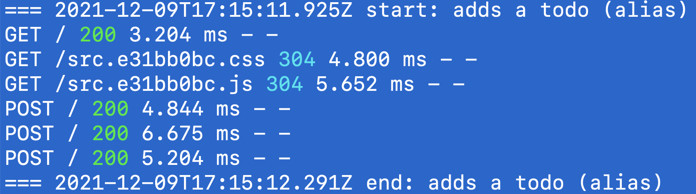
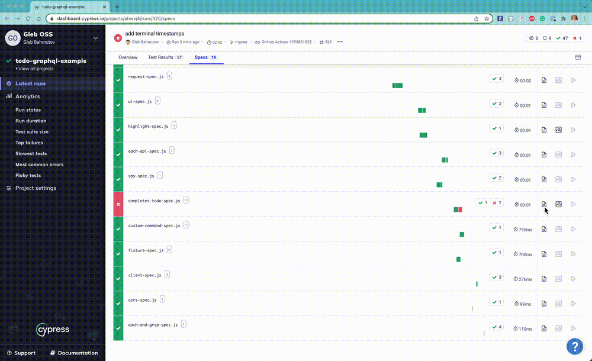
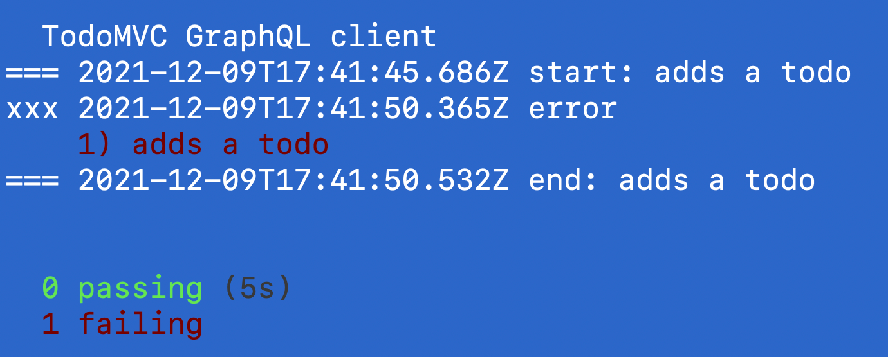
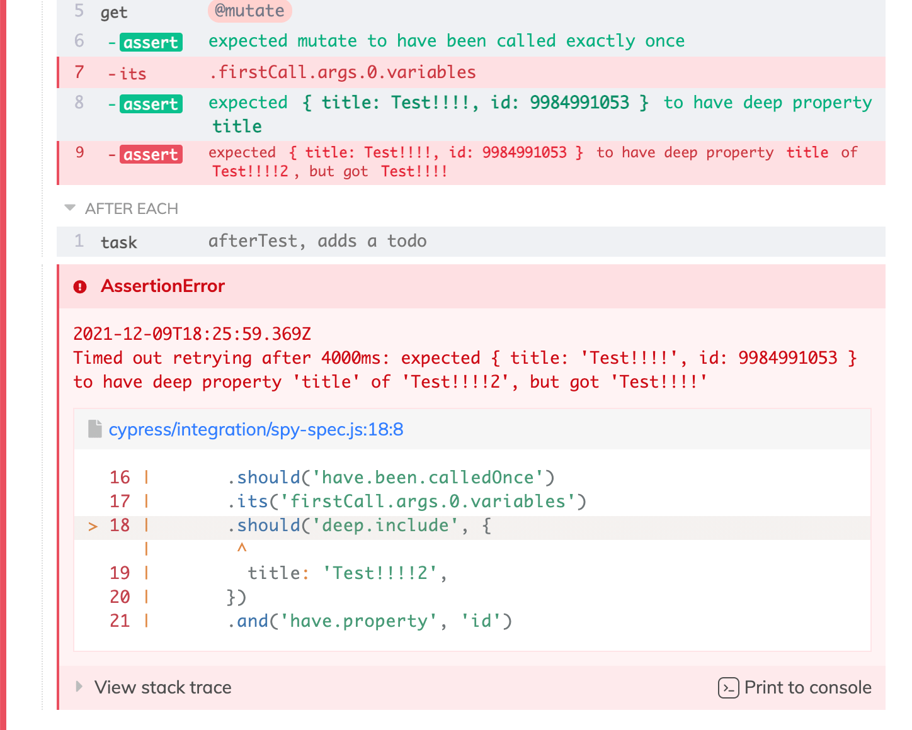
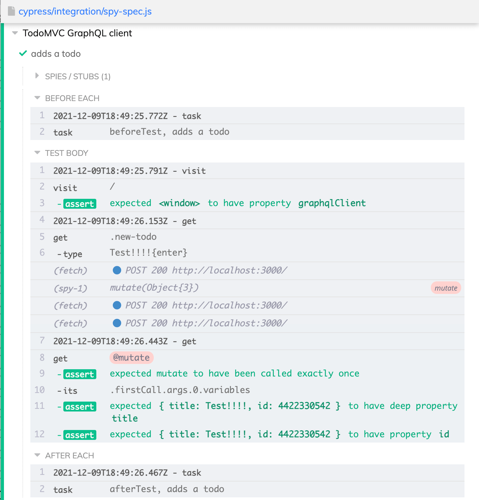

Sometimes a test fails due to some API service failing to work. You need to debug the service logs, the first piece of information you need is to know when the failure has happened. This blog post explains how to add the timestamps to different parts of Cypress output.
- Terminal output
- Screenshot timestamp
- Add timestamp to the error message
- Command timestamps
- cypress-timestamps plugin
- See also
üéÅ You can find the source code for this blog post in the repo bahmutov/todo-graphql-example.
Terminal output
Let's output to the terminal when each test begins and finishes using the plugin file. In the plugin file register new tasks to just print the timestamp of the test
1 | module.exports = (on, config) => { |
We can execute these tasks around every test by using the global beforeEach and afterEach hooks defined in support file.
1 | beforeEach(() => { |
Note: we had to create our own tasks because Cypress API only has before:run and before:spec events, thus there is no built-in way to run something before or after every test.
The local terminal shows the UTC dates

If you are recording to Cypress Dashboard, the timestamps and all the output from the plugin file is captured too.

Screenshot timestamp
When a command or an assertion fails, Cypress takes a screenshot, unless screenshotOnRunFailure: false is set. The screenshot event in the plugin file has the information we need - and it is pretty accurate timestamp of the failure. Let's print it to the terminal:
1 | module.exports = (on, config) => { |
Note: the screenshot on failure is only taken in the cypress run mode.
Here is a typical output from a failed test, note that using the screenshot we can pin-point the failure a few hundred milliseconds closer compared to the afterEach hook task.

Add timestamp to the error message
In the Cypress catalog of events you can find the fail event. We can modify the error message and rethrow it. Since we want every test to have the timestamp in the error message, we place our callback in the support file.
1 | Cypress.on('fail', (err) => { |
The timestamp is going to be present in the Dashboard and in the screenshot.

Command timestamps
Inside a long test, you might want to know when a particular command has run. Cypress events has an event command:start delivered when a command is starting. We can take an advantage of this command to add timestamps for each parent command to avoid spamming the Command Log with excessive logging.
1 | Cypress.on('command:start', ({ attributes }) => { |

Now we know what is going on and when it is happening!
Note: we cannot simply use cy.log inside the command:start callback since cy.log is itself a command, which will trigger another command:start event, which will just keep looping until the browser runs out of memory.
cypress-timestamps plugin
I factored out the timestamp code into its own plugin cypress-timestamps. Add this plugin as a dev dependency using npm i -D cypress-timestamps and call the registration functions from the support and the plugin files
1 | // https://github.com/bahmutov/cypress-timestamps |
1 | module.exports = (on, config) => { |